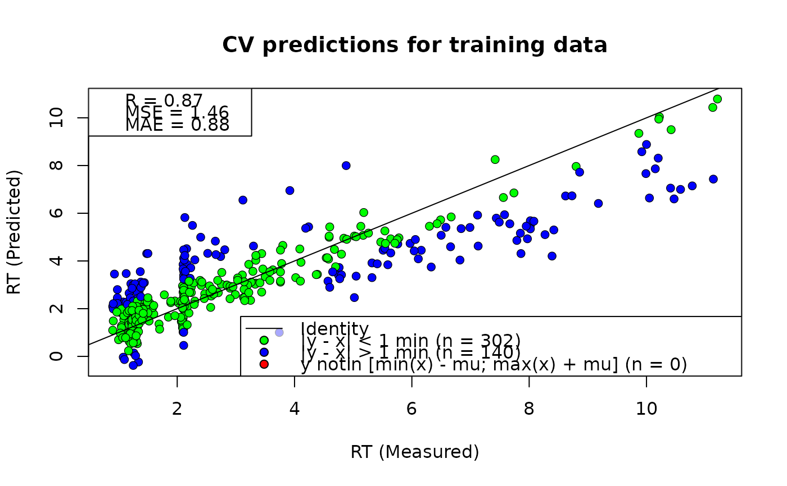

Creates scatter plots of measured vs. predicted retention times (RT) for a
FastRet Model (FRM). Supports plotting cross-validation (CV) predictions and
fitted predictions on the training set, as well as their adjusted variants
when the model has been adjusted via adjust_frm(). Coloring highlights
points within 1 minute of the identity line and simple outliers.
Usage
plot_frm(frm = train_frm(verbose = 1), type = "scatter.cv", trafo = "identity")Arguments
- frm
An object of class
frmas returned bytrain_frm().- type
Plot type. One of:
"scatter.cv": CV predictions for the training set
"scatter.cv.adj": CV predictions for the adjustment set (requires
frm$adj)"scatter.train": Model predictions for the training set
"scatter.train.adj": Adjusted model predictions for the adjustment set (requires
frm$adj)
- trafo
Transformation applied for display. One of:
"identity": no transformation
"log2": apply log2 transform to axes (metrics are computed on raw values)
Examples
frm <- read_rp_lasso_model_rds()
plot_frm(frm, type = "scatter.cv")
